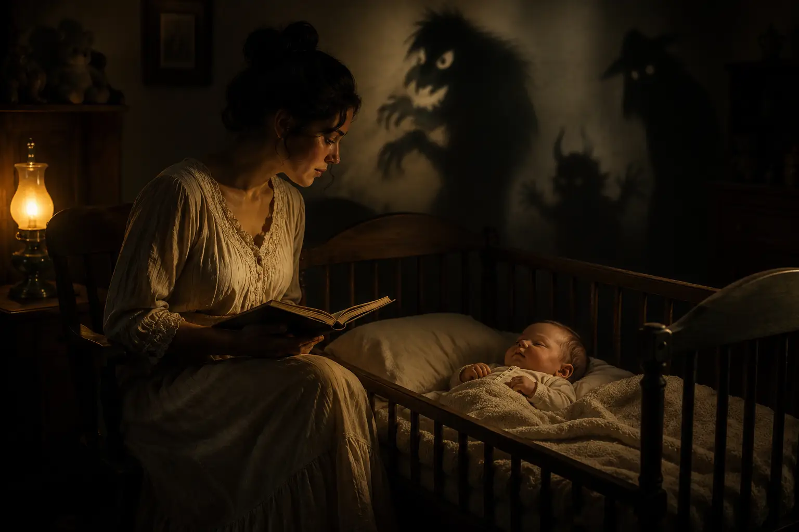
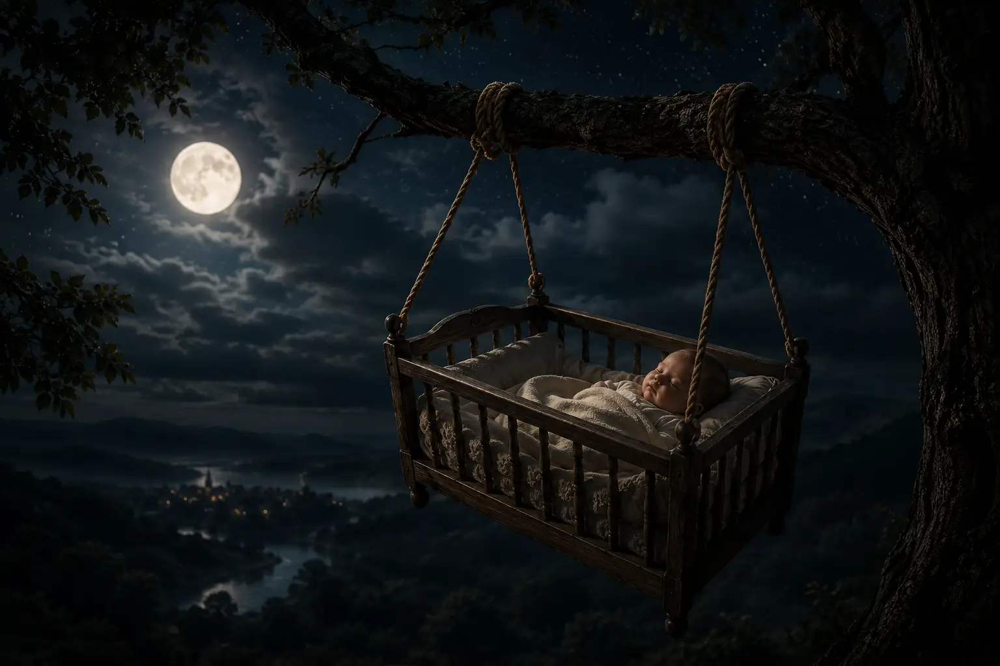
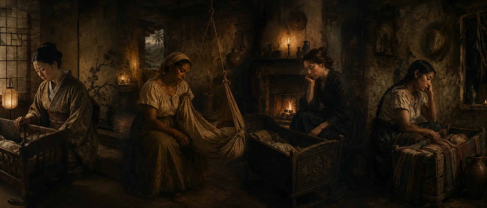
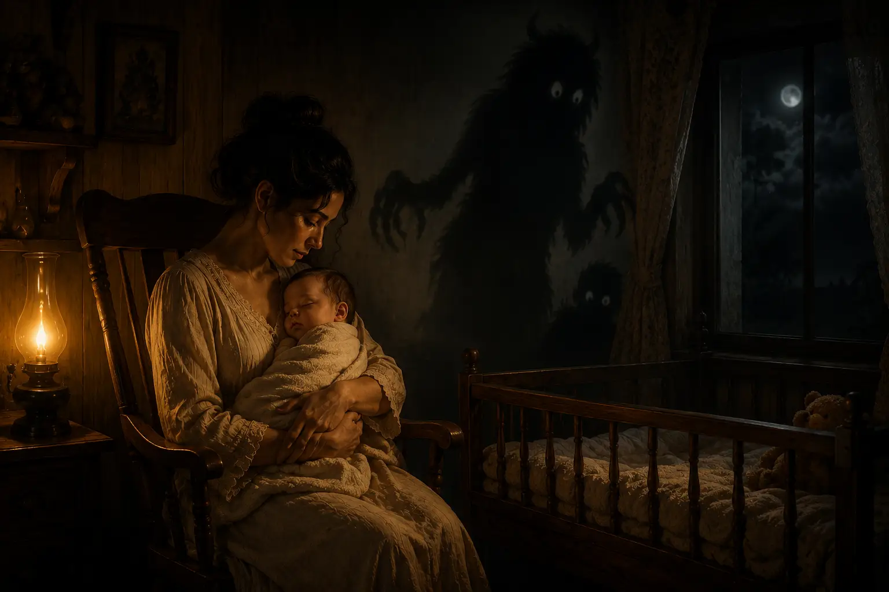
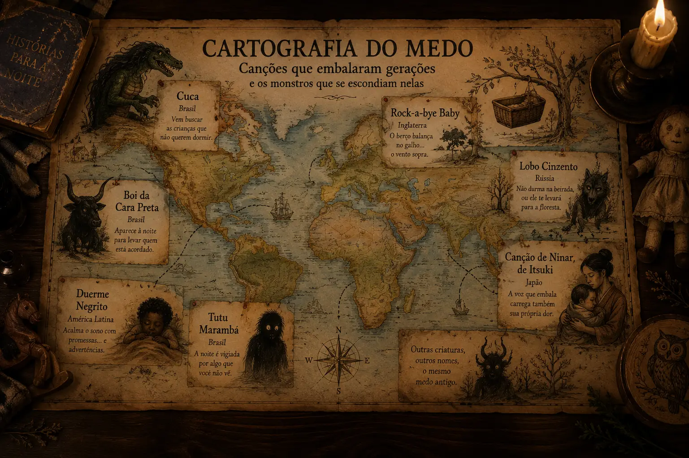

एक बच्चे को यह कहकर सुलाने की कोशिश करने के बारे में कुछ बहुत अजीब है कि एक प्राणी उसे लेने के लिए आ रहा है। यहां तक कि अजनबी भी इसे एक नाजुक आवाज, धीमी गति और स्नेही अभिव्यक्ति के साथ करना है, जैसे कि सुरक्षा और खतरा एक ही इशारे के स्वाभाविक हिस्से थे।
शायद आप सोच रहे होंगे कि बच्चे ने उन शब्दों को समझा भी नहीं। वह शायद वास्तव में समझ नहीं पाया था। शुक्र है। उसने लय सुनी, आवाज को पहचाना और उन लोगों के शरीर को महसूस किया जिन्होंने उसे हिलाया। लेकिन जो लोग गाते थे, वे पूरी तरह से समझ गए थे कि वे क्या कह रहे थे।
यह इस समय है कि गीत केवल बच्चे के बारे में बात करना बंद कर देता है। पूरी पीढ़ियां यह सुनकर सो गई हैं कि कुका, द बूगीमैन, द टूटू मारम्बा या काले चेहरे वाला बैल नींद में देरी होने पर वे दिखाई दे सकते थे।
राग ने शांति का वादा किया। कथा ने सुरक्षा की शर्त के रूप में आज्ञाकारिता की पेशकश की। शायद लोरी कभी भी बच्चों के लिए सिर्फ गाने नहीं थे। शायद वे छोटे स्थान भी थे जिनमें वयस्कों ने थकान, गरीबी, भय, अकेलापन, मृत्यु, अनुपस्थिति और एक ऐसी दुनिया में किसी नाजुक व्यक्ति की देखभाल करने की हताश भावना जमा की जो कभी भी पूरी तरह से सुरक्षित नहीं थी।

संगीत शांत हो गया। कहानी, इतना नहीं
एक लोरी उन तत्वों द्वारा सुरक्षा पैदा करती है जो शब्दों की शाब्दिक समझ पर निर्भर नहीं करते हैं। दोहराव, धीमी गति, शरीर का संपर्क और एक परिचित आवाज ध्यान को व्यवस्थित करने और बच्चे के उपद्रव को कम करने में मदद करती है।
यह विरोधाभास के हिस्से की व्याख्या करता है। बच्चे को फॉर्म से आश्वस्त किया जा सकता था जबकि वयस्क खतरे के बारे में गाता था। लेकिन शायद गीत पूरी तरह से उसे संबोधित नहीं थे।
जिस किसी ने भी बच्चे को शांत करने की कोशिश में बहुत समय बिताया है, वह जानता है कि गायन उन लोगों को भी व्यवस्थित करता है जो गाते हैं। सांस को एक लय मिलती है, दोहराव वाला इशारा निरंतरता प्राप्त करता है और आवाज मौन पर कब्जा कर लेती है। संगीत एक ही समय में दो शरीरों को नियंत्रित करता है: उस बच्चे का जो नींद का विरोध करता है और वह वयस्क जो अलग न होने की कोशिश करता है।
यह आश्चर्य नहीं करना मुश्किल है कि इनमें से कितने गीत वास्तव में भेष में स्वीकारोक्ति थे। एक माँ के पास यह कहने के लिए जगह नहीं हो सकती है कि वह थकी हुई थी। एक देखभालकर्ता को शिकायत करने की अनुमति नहीं दी जा सकती है। एक परिवार के पास भूख, बीमारी या मृत्यु दर के बारे में बात करने के लिए शब्द नहीं हो सकते हैं। लेकिन हर कोई गा सकता था।
बच्चे ने एक राग सुना। वयस्क ने इतिहास में तब्दील अपनी पीड़ा सुनी।
ब्राजील: डर से सुरक्षित नींद
ब्राजील के गीतों में, खतरे को आमतौर पर एक नाम, एक चेहरा और एक इरादा दिया जाता है। कुका उसे लेने आता है। बूगीमैन छत पर इंतजार कर रहा है। काले चेहरे वाला बैल डर से जुड़ा हुआ प्रतीत होता है। टूटू मारम्बा रात को एक ऐसी जगह में बदल देता है जिसे बच्चा देख नहीं सकता है।
Recriação editorial baseada nos motivos tradicionais brasileiros citados no artigo.Dorme, menino, que a noite já vem;
fica no colo e não chama ninguém.
Lá fora a criatura percorre o telhado,
mas dentro da casa você está guardado.
जब हम वयस्कों के रूप में इन गीतों को सुनते हैं, तो यह सवाल लगभग अपने आप उठता है: यह सब समझने के बाद कौन सा बच्चा चैन से सो पाएगा?
बहुत छोटे बच्चे शायद पूरी कहानी को नहीं समझ पाए थे। हालाँकि, जैसे-जैसे भाषा विकसित हुई, राक्षस ने एक स्पष्ट कार्य करना शुरू कर दिया। उन्होंने एक सीमा निर्धारित की: चुप रहो, बाहर मत जाओ, रोओ मत, अवज्ञा मत करो, और जागते मत रहो।
डर ने एक त्वरित, सस्ते और संचारित करने में आसान शैक्षिक उपकरण के रूप में काम किया। के बारे में स्पष्टीकरण से पहले बाल विकास, नींद की दिनचर्या या भावनात्मक विनियमन, थके हुए वयस्क थे जो उन्होंने अपने स्वयं के देखभाल करने वालों से जो सुना था उसे दोहरा रहे थे।
हमें इन लोगों को खलनायक बनाने की जरूरत नहीं है। कई लोग कड़ी मेहनत, असुरक्षा, भरे हुए घरों और एक बच्चे के साथ धैर्यपूर्वक बातचीत करने की बहुत कम संभावना से घिरे रहते थे। फिर भी, तंत्र इस बात पर नजर रखने योग्य है कि यह क्या था: खतरे के माध्यम से व्यवहार उत्पन्न करने का प्रयास।
ब्राज़ीलियाई परंपरा अलग-थलग नहीं थी। कुका से संबंधित आंकड़ों के एक परिवार से संबंधित है नारियल और कोक, पुर्तगाली, स्पेनिश और लैटिन अमेरिकी परंपराओं में मौजूद। नाम बदल गया। संदेश पहचानने योग्य रहा: जब तक आप आज्ञा का पालन करते हैं, तब तक आप सुरक्षित हैं। इस आज्ञाकारिता से कुछ तुम्हें मिल सकता है।

इंग्लैंड: एक पेड़ में ऊंचा पालना
में रॉक-ए-बाय बेबी, अंग्रेजी बोलने वाले ब्रह्मांड में सबसे प्रसिद्ध लोरी में से एक, बच्चा एक शाखा पर पालने में दिखाई देता है। हवा चलती है, शाखा टूट जाती है और पालना गिर जाता है।
Tradução editorial do motivo narrativo tradicional de रॉक-ए-बाय बेबी.No alto da árvore o berço balança,
levado pelo vento que sopra no galho.
Quando a madeira se parte na noite,
berço e proteção descem juntos ao chão.
गीत की उत्पत्ति के बारे में अलग-अलग परिकल्पनाएं हैं, और उनमें से कई को पर्याप्त दस्तावेज के बिना निश्चितता के रूप में दोहराया जाता है। जो तत्व बना रहता है वह एक असंभव जगह पर समर्थित बच्चे की सुरक्षा के लिए बनाई गई संरचना की परेशान करने वाली छवि है।
शायद शाखा सिर्फ एक काव्यात्मक संसाधन है। लेकिन इसे देखभाल के अनुभव के अनैच्छिक प्रतिनिधित्व के रूप में भी पढ़ा जा सकता है। वयस्क चट्टानें, रक्षा करता है और देखता है, यह जानते हुए कि वह हवा, बीमारी, दुर्घटना या भविष्य को नियंत्रित नहीं करता है।
पालना सुरक्षा का प्रतिनिधित्व करता है, लेकिन यह दुनिया की नाजुकता से जुड़ा हुआ है। राग कहता है कि सब ठीक हो जाएगा। इतिहास हमें याद दिलाता है कि शायद ऐसा नहीं होगा।
रूस: किनारे के पास मत सोओ
एक प्रसिद्ध रूसी लोरी में, बच्चे को बिस्तर के अंत में न रहने की चेतावनी दी जाती है। अन्यथा, एक छोटा ग्रे भेड़िया दिखाई दे सकता है और आपको जंगल में ले जा सकता है।
Tradução editorial do motivo tradicional russo associado ao lobo e à borda da cama.Dorme longe da borda, pequeno,
não deixes o cobertor escapar.
O lobo cinzento ronda a janela
e conhece o caminho para a mata.
इस मामले में, खतरे में एक व्यावहारिक निर्देश शामिल है। किनारे के पास न जाएं। संरक्षित स्थान से अधिक न हो। भेड़िया एक घरेलू सीमा को एक ऐसी कहानी में बदल देता है जिसे भूलना असंभव है।
बिस्तर अब सिर्फ फर्नीचर का एक टुकड़ा नहीं रह गया है। इसका किनारा घर और जंगल के बीच की सीमा बन जाता है। कमरा तभी तक सुरक्षित रहता है जब तक नियम का सम्मान किया जाता है।
क्या यह क्रूर लगता है? शायद यह है। लेकिन यह एक आवर्ती मानव समाधान को भी प्रकट करता है: जब एक अमूर्त स्पष्टीकरण पर्याप्त नहीं होता है, तो एक प्राणी का आविष्कार किया जाता है। बच्चा गिरने के जोखिम को नहीं समझ सकता है, लेकिन समझता है कि वह भेड़िये को नहीं ढूंढना चाहता है।

जापान: जब पालने के बगल में आवाज भी बचकानी थी
A इत्सुकी की लोरी, मूल रूप से कुमामोटो के जापानी क्षेत्र से, बच्चे से ध्यान उस बच्चे पर स्थानांतरित कर देता है जो उसे हिलाता है। यह गीत अन्य परिवारों के लिए काम करने के लिए भेजे गए गरीब युवा देखभाल करने वालों के जीवन से जुड़ा है।
Tradução editorial dos temas sociais associados à canção de ninar de Itsuki.Embalo o filho de outra casa,
enquanto a minha permanece distante.
Minha voz adormece esta criança,
mas não adormece a saudade que carrego.
यहां किसी राक्षस की जरूरत नहीं है। जो डराता है वह वास्तविकता है।
जब हम एक लोरी की कल्पना करते हैं, तो हम आमतौर पर एक माँ को घर के अंदर सुरक्षित देखते हैं, जो स्वेच्छा से अपने बच्चे के लिए गाती है। हालांकि, कई गाने नानी, नौकरानियों, गरीब लड़कियों और अपने परिवारों से दूर काम करने वाली महिलाओं द्वारा प्रसारित किए गए थे।
बच्चा एकमात्र श्रोता हो सकता है जिसके सामने वे बिना किसी रुकावट के बोल सकते थे। गीत ने बच्चे को शांत किया, लेकिन देखभाल करने वाले को काम, दूरी और असमानता की पुनरावृत्ति को सहन करने में भी मदद की।
स्नेह तब भी सच्चा हो सकता है जब वह एक अनुचित रिश्ते के भीतर मौजूद हो। हो सकता है कि यह इन गीतों को और भी अधिक मानवीय बना दे। वे शुद्ध और संगठित भावनाओं से पैदा नहीं हुए थे। वे ऐसे लोगों से पैदा हुए थे जो एक ही समय में कोमलता और आक्रोश महसूस करने में सक्षम थे।
लैटिन अमेरिका: माँ के काम करते समय सो रहा है
में ड्यूर्मे नेग्रिटो, विभिन्न लैटिन अमेरिकी देशों में व्यापक रूप से, बच्चे को पालना दिया जाता है जबकि उसकी माँ खेतों में काम करती है। यह गीत भोजन, मातृ अनुपस्थिति, शोषण और धमकी के वादे को जोड़ता है।
Recriação editorial inspirada nos temas de trabalho, ausência e promessa presentes em ड्यूर्मे नेग्रिटो.Dorme enquanto tua mãe trabalha,
longe da casa e perto do campo.
Ela voltará trazendo alimento,
se o trabalho não lhe tomar o caminho.
खतरा केवल अलौकिक से नहीं आता है। इसमें पदानुक्रम, गरीबी और सामाजिक हिंसा है। बच्चे को सोने की जरूरत इसलिए नहीं है कि घर को शांति मिल गई है, बल्कि इसलिए कि वयस्क दुनिया उसके लिए रुकने में सक्षम होने के बिना काम करती रहती है।
मां बहुत दूर है। देखभाल करने वाला शांत होने की कोशिश करता है। भविष्य के भोजन का वादा किया जाता है। खतरा उस बात को पूरा करने के लिए प्रतीत होता है जिसे कोमलता अकेले पूरा करने में सक्षम नहीं हो सकती है।
यह एक पालने द्वारा गाया गया एक छोटा सा सामाजिक नाटक है।
मौत प्रकट हुई क्योंकि वह आसपास थी
अधिकांश इतिहास के लिए, एक बच्चे या एक छोटे बच्चे को खोना एक वर्तमान संभावना थी। बीमारियों, भूख, दुर्घटनाओं और उपचार की कमी ने देखभाल को नुकसान की संभावना के साथ निरंतर सह-अस्तित्व में बदल दिया।
यह आश्चर्य की बात नहीं है कि कुछ गाने गिरने, गायब होने और अंतिम संस्कार की बात करते हैं। इसका मतलब यह नहीं है कि वयस्क बच्चे की मृत्यु की कामना करते थे। खतरे के बारे में गाना किसी ऐसी चीज़ को आकार देने का प्रयास हो सकता है जिसका कोई स्पष्टीकरण या नियंत्रण नहीं था।
संयोग का कोई चेहरा नहीं है। बीमारी को छत से बाहर नहीं निकाला जा सकता है। मृत्यु दर धमकियों का पालन नहीं करती है। लेकिन राक्षस को एक नाम दिया जा सकता है।
जब डर आकार लेता है, तो इसके बारे में एक कहानी बताना संभव हो जाता है। यह बताना संभव है कि वह कहाँ रहता है, कब प्रकट होता है और उसे दूर रखने के लिए क्या किया जाना चाहिए। कथा नियंत्रण की भावना प्रदान करती है, तब भी जब सच्चा खतरा पहुंच से बाहर रहता है।
शायद यही कारण है कि इतनी सारी संस्कृतियों ने बच्चों के कमरे को प्राणियों से भर दिया है। इसलिए नहीं कि वयस्क डर से अनजान थे, बल्कि इसलिए कि वे इसे बहुत अच्छी तरह से जानते थे।

मनोविज्ञान इस विरोधाभास में क्या देखता है?
यह कहना आसान होगा कि इन सभी गीतों ने बच्चों को आघात पहुंचाया। यह कहना भी आसान होगा कि वे सिर्फ मासूम चुटकुले थे। इनमें से कोई भी उत्तर पूरी घटना की व्याख्या नहीं करता है।
बहुत छोटे बच्चे मुख्य रूप से लय, दोहराव, स्वर और देखभाल करने वाले की उपस्थिति का जवाब देते हैं। एक बड़ा बच्चा, हालांकि, पहले से ही शब्दों को समझता है, पात्रों को खतरों और नोटिस के साथ जोड़ता है जब संगीत के बाहर खतरे का उपयोग किया जाता है।
सुरक्षा में डर का अनुभव करने और इसके द्वारा नियंत्रित होने के बीच एक बुनियादी अंतर है। किसी भरोसेमंद व्यक्ति की गोद में बताई गई एक डरावनी कहानी बच्चे को वास्तविक खतरे का सामना किए बिना कठिन भावनाओं का पता लगाने की अनुमति दे सकती है।
वयस्क खतरा प्रस्तुत करता है और साथ ही, इसे एक साथ पार करने के लिए वहीं रहता है। लेकिन जब वह प्राणी को एक स्थायी अधिकार में बदल देता है, तो संदेश बदल जाता है।
"कुछ डरावना है, लेकिन तुम मेरे साथ हो" सिखाता है कि डर का सामना किया जा सकता है। "आज्ञा का पालन करो, नहीं तो यह तुम्हें ले जाएगा" सिखाता है कि सुरक्षा समर्पण पर निर्भर करती है।
इस बॉर्डर पर कई लोरी रहती हैं।
डर एक शिक्षा तकनीक थी
बचपन के अनुकूल स्पष्टीकरण होने से पहले, कई समुदायों ने कहानियों के माध्यम से सीमाएं सिखाईं। जंगल में मत जाओ। नदी के पास न जाएं। अंधेरा होने के बाद न निकलें। किनारे के पास खड़े न हों। अवज्ञा मत करो।
अमूर्त खतरा भेड़िया, चुड़ैल, आत्मा में बदल गया था, बैग मैन या छत से प्राणी। कहानी को याद रखना आसान था, मौखिक रूप से पीढ़ियों को पार कर सकता था, और तब भी काम करता था जब बच्चा अभी तक जटिल कारण-और-परिणाम संबंधों को नहीं समझता था।
डर ने व्यवहार की समस्या को जल्दी से हल कर दिया, लेकिन इसने नियम के वास्तविक कारण को छुपाया। बच्चे ने राक्षस के कारण जंगल से बचना सीखा, इसलिए नहीं कि वह खो सकता था। वह प्राणी के कारण नदी से बचता था, इसलिए नहीं कि वह डूब सकता था।
आप इस तंत्र को पहचान सकते हैं, भले ही आप ठीक उसी गाने सुनकर बड़े नहीं हुए हों। जब भी हम तत्काल आज्ञाकारिता प्राप्त करने के लिए एक खतरनाक उपस्थिति का आविष्कार करते हैं तो वह जीवित रहता है।
राक्षस कुशल है। समझने में अधिक समय लगता है।
हर समाज वह गाता है जिसे वह नहीं भूल सकता
जंगलों से घिरे क्षेत्रों में, खतरे को भेड़िये की तरह उभर सकता है। इबेरियन और लैटिन अमेरिकी परंपराओं में, यह एक ऐसे प्राणी के रूप में प्रकट होता है जो बच्चों का अपहरण करता है। बाल श्रम और असमानता से चिह्नित समुदायों में, संगीत शोषित देखभाल करने वाले की आवाज को संरक्षित करता है। जहां नुकसान अक्सर होता था, मौत बिना अनुमति मांगे गीत के बोल में प्रवेश करती है।

ये गाने इमोशनल मैप हैं। वे रिकॉर्ड करते हैं कि किसने देखभाल की, किसने काम किया, कौन अनुपस्थित था, किन जानवरों ने समुदाय को घेर लिया था, घर से परे कौन से खतरे मौजूद थे, और बचपन से किस तरह की आज्ञाकारिता की उम्मीद की जाती थी।
शांत होने का तरीका सीमाओं को पार कर सकता है। आवाज धीमी हो जाती है, राग खुद को दोहराता है और शरीर को एक लय मिल जाती है। लेकिन कहानियां स्थानीय अनुभव ले जाती हैं।
राग लगभग सार्वभौमिक हो सकता है। राक्षस हमेशा एक उच्चारण के साथ बोलता है।
शायद यह गाना कभी सिर्फ बच्चे के लिए नहीं था
जब एक वयस्क एक बच्चे को गाता है, तो एक सरल संचार होता है: कोई परवाह करता है और किसी को देखभाल मिलती है। लेकिन एक और बातचीत चल रही है।
दोहराव गाने वालों को शांत करता है। लय श्वास को व्यवस्थित करती है। राग एक ऐसे जीवन के भीतर कुछ मिनटों की व्यवस्था बनाता है जो शायद टूट रहा है। गीत कठिन भावनाओं को परंपरा के रूप में प्रच्छन्न होने की अनुमति देते हैं।
शायद एक माँ यह नहीं कह सकती थी कि वह हताश थी। शायद एक देखभाल करने वाला यह नहीं कह सकता था कि वह छोड़ना चाहती है। शायद एक पिता अपने बच्चे को खोने के डर को स्वीकार नहीं कर सकता था। लेकिन हर कोई गा सकता था।
लोरी स्नेह लेकर आती थी क्योंकि स्नेह था। वे डर रखते थे क्योंकि डर था। एक चीज दूसरे को खत्म नहीं करती है। वे किसी से गहराई से प्यार करने और यह महसूस करने के एक ही विरोधाभासी अनुभव से संबंधित हैं कि यह प्यार हर चीज पर नियंत्रण प्रदान नहीं करता है जो हो सकता है।
इसलिए जब हम आज राक्षसों, गिरने और गायब होने के बारे में बात करते हुए एक कोमल आवाज सुनते हैं, तो हम केवल अतीत की एक अजीब आदत का सामना नहीं कर रहे हैं। हम वयस्कों को अपनी रातों से बचने की कोशिश करते हुए सुन रहे हैं।
शायद सबसे डरावनी बात यह नहीं है कि उन्होंने बच्चे को सुलाने के लिए भयानक बातें गाईं। शायद यह महसूस कर रहा है कि, कई मामलों में, गायन ही एकमात्र तरीका था जिससे उन्हें इस बारे में बात करनी थी कि उन्हें सोने नहीं दिया।